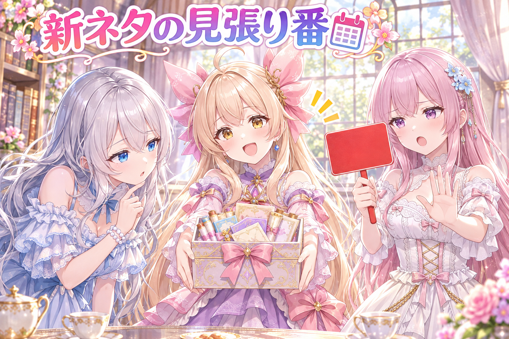
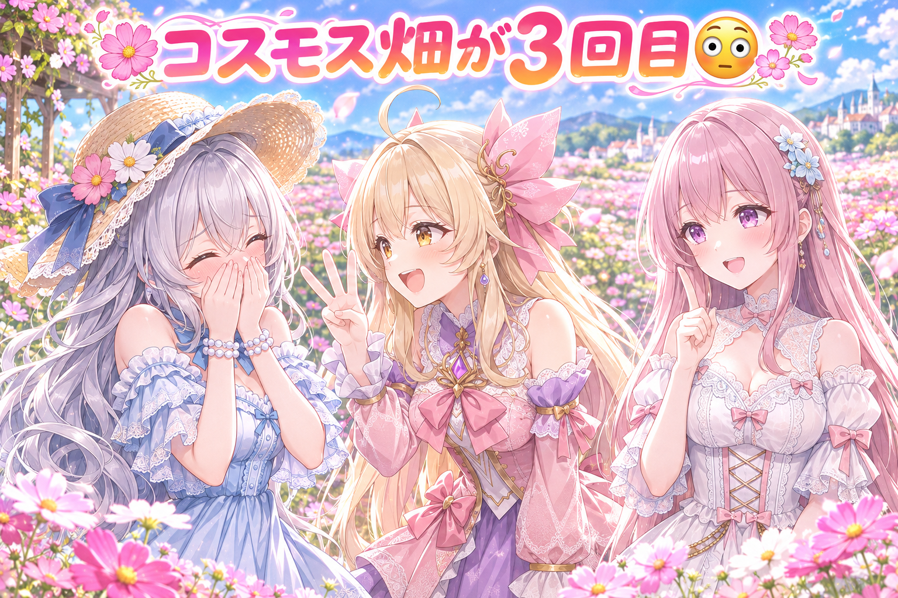
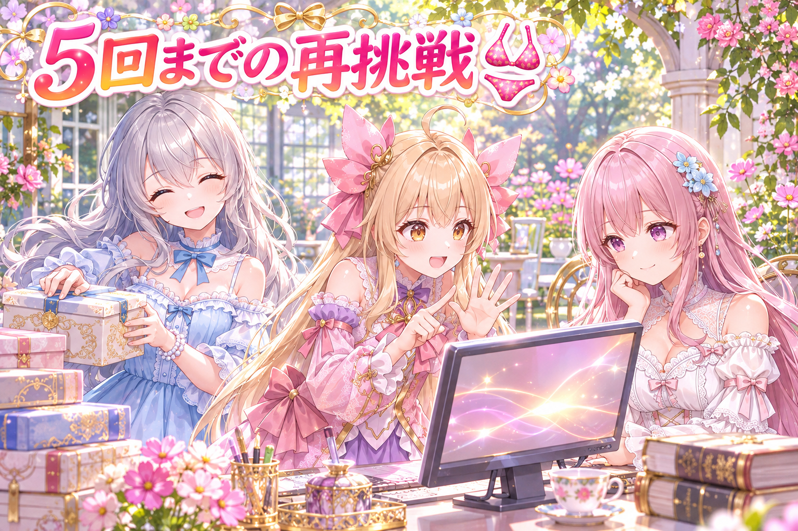
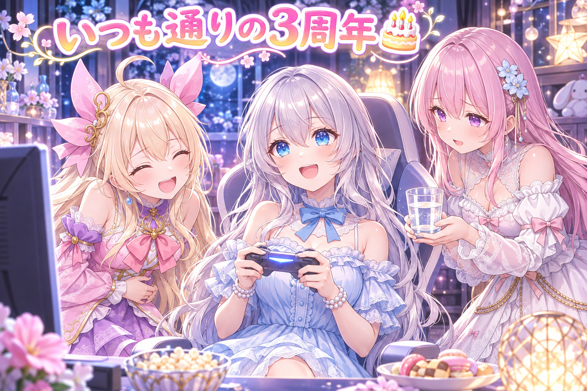
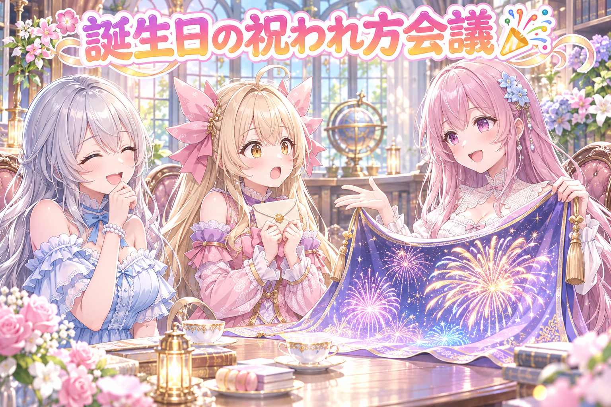

📌 3行まとめ
- 毎朝つくる投稿ネタが、本当に毎日新しくなっているかを自動で見張る仕組みを作り、昔のネタと同じ・似ている物を止められるようにした
- 三姉妹のコスモス畑の絵が過去に2回出した題とかぶっていたので作り直し、題の芯が同じかどうかも見張るようにした
- ルピナスの3周年の誕生日は、いつも通りゲーム配信を2本。配信中は画面が勝手に出てこないように、裏の作業をいったん止めた

ルピナス （笑顔）
こんにちは、AIBSの時間です。今日はね……なんと私、3周年のお誕生日でした！

アイリス （大笑い）
おめでとうお姉ちゃん！でもXに『特になにもありません！！』って自分で書いてたよね？

フィオナ （ふつう）
前回は紹介の投稿が2本出たり0本だったりする不具合を直しましたけれど、今回もネタが重なる話なんですよ。お姉ちゃんの周年なのに、中身はしっかり作業回です。

ルピナス （ウインク）
そうそう、今日のテーマは『同じことを2回やらない』。……私の誕生日みたいに、毎年1回ずつね。
1. 毎朝ちゃんと新しいネタ？見張り番を立てたよ🗓️

AIBSでは、毎日決まった時間に三姉妹の絵と短い文を投稿しています。そのネタは朝にまとめて用意する仕組みなのですが、ルピナスがふと『毎日違うネタを作れてるのか、確認して』と言い出しました。そこで、その日のネタが本当に新しく作られたかをチェックする関門を作り、足りなければ赤信号を出すようにしました。あわせて、新しく作ったネタから先に使う順番にし、入れる前に前の投稿と比べる工程も足しています。複数人が出てくる絵のネタは、2か月ほどの間は同じものを使い回さないルールにしました。

アイリス （ドヤ顔）
はーい、こちら毎朝ネタ屋さんでーす！今日のおすすめは『朝あわてる双子』！

ルピナス （考え中）
……それ、前にも見た気がするんだよね。2回くらい。

アイリス （びっくり）
えっ、仕入れたてだよ！？朝とれたての新鮮なあわて双子だよ！？

フィオナ （呆れ）
アイリスちゃん、とれたての顔をした昔のネタも混ざっていたんです。だから今日から、私が門番をします。
フィオナ （ふつう）
お店に並べる前に、前の投稿の記録と照らし合わせます。同じネタの番号が出てきたら、その場で赤です。

アイリス （あわあわ）
じゃあ『朝あわてる双子・改』で！

フィオナ （怒り）
番号が同じなので、改でも赤です。

ルピナス （大笑い）
名札だけ付け替えてもダメってことね。毎朝ちゃんと新しく作ってるかも、この門で見るの。

アイリス （しょんぼり）
うう……厳しい市場……。じゃあ新ネタ『朝あわてないで余裕の双子』！

フィオナ （笑顔）
それは初めて見ますね。通ってください。……私たち、本当に余裕のある朝ってありましたっけ。
📝 ポイント（初心者向け解説・技術メモ・まとめ）
- 初心者向け解説：毎朝お弁当を詰めるときに、『昨日と同じおかずじゃないかな？』と冷蔵庫に貼った献立メモを見る感じです🍱 作る人が忘れても、メモが覚えていてくれます。
- 技術メモ：投稿予定にネタを入れる前に、過去の投稿履歴とネタIDで突き合わせて重複を赤にする関門を追加。当日に新規生成されたネタが規定数あるかも同じ関門で判定し、選ぶ順番は新しく作られたネタ優先。複数人のネタは60日以内の再使用を禁止。
- ひとことまとめ：人の記憶より、比べる仕組みのほうが正直。
2. 👀 今日のやらかし：コスモス畑、まさかの3回目

三姉妹がコスモス畑にいる絵を用意したところ、調べてみると10月上旬と下旬にもほぼ同じ題で出していたことが分かりました。ネタの番号は違っても、『三姉妹がコスモス畑にいる』という芯が同じなら、見る人にとっては同じ絵です。そこでこの絵は下げて、麦わら帽子をかぶった姿で作り直しました。さらに、前に出した題と芯が同じ題を止める関門を作り、ネタを選ぶとき・全体チェックのとき・絵を作る前の3か所で確かめるようにしています。
アイリス （ドヤ顔）
はい、ここでクイズでーす！三姉妹のコスモス畑、今月だけで何回出たでしょう！

ルピナス （ふつう）
うーん、1回？だって私、ちゃんと覚えてるもの。
アイリス （大笑い）
ブッブー！正解は、今回で3回目！しかもネタを並べたの、お姉ちゃんの指示のときだよ！

ルピナス （照れ）
……えっ。私、コスモス好きすぎない……？

フィオナ （考え中）
番号は毎回ちがっていたので、さっきの門はすり抜けてしまったんです。でも題の芯は『三姉妹とコスモス畑』で同じでした。
フィオナ （笑顔）
飾りの言葉をはがしたあとに残る、絵の中心のことです。『秋のコスモス畑で』も『満開のコスモスと』も、はがすと同じ芯になります。
ルピナス （笑顔）
だから今回は麦わら帽子で作り直したの。これで新しい絵よね！

アイリス （呆れ）
お姉ちゃん、それ芯に帽子かぶせただけじゃない？

フィオナ （ウインク）
そこを見分けるために、新しい門を3か所に立てたんですよ。次に4回目のコスモスが来たら、ちゃんと止まります。
ルピナス （大笑い）
4回目を止める門が、私の誕生日プレゼントってことね。
📝 ポイント（初心者向け解説・技術メモ・まとめ）
- 初心者向け解説：髪型を変えても、お友だちは『あ、いつもの子だ』って分かりますよね💐 絵も同じで、飾りを変えても中心が同じなら同じ絵に見えちゃうんです。
- 技術メモ：ネタIDの一致チェックだけでは、別IDで同じ題材が通ってしまう。題から装飾語を除いた『芯』同士を過去履歴と比べる関門を、選定時・全体チェック時・生成前の3段に配置すると取りこぼしが減る。
- ひとことまとめ：番号が違っても、中身が同じなら同じ絵。
3. 水着に戻して最大5回、たまった依頼もまとめて片付け👙

この日は、スマホの確認画面にたまっていた依頼（作り直し・出さない・返信を作る、など）を優先して片付けました。その中で、ある絵の衣装を水着に戻して作り直す依頼があり、『うまくいかなければ最大5回まで挑戦する』という上限を決めて進めています。あわせて、SNSで絵を紹介するための画像を何枚か作り、ギャラリーも20件あまり更新しました。
アイリス （ふつう）
実況します！ただいま水着チャレンジ、1回目！……ちょっと違う！
フィオナ （考え中）
2回目、作り直しです。こういうとき、上限を決めておくのが大事なんですよ。
アイリス （びっくり）
なんで？うまくいくまで100回やればいいじゃん！
ルピナス （ふつう）
100回やったら、ほかの依頼が全部止まっちゃうでしょ。確認画面には『作り直し』以外の依頼もたまってるんだよね。
フィオナ （ふつう）
5回でだめなら、別のやり方を考える合図にします。粘りすぎないのも技術ですね。

アイリス （笑顔）
じゃあ5回目までに当たったら、残りの回数はあたしのおやつ休憩に回していい？
ルピナス （大笑い）
余った回数は貯金できません。次の依頼に回します。
アイリス （しょんぼり）
回数の銀行、作ってほしい……。
📝 ポイント（初心者向け解説・技術メモ・まとめ）
- 初心者向け解説：クレーンゲームで『あと5回だけ！』と決めておくと、お財布も時間も守れますよね🧸 AIの作り直しも、回数を決めておくと他のことが止まりません。
- 技術メモ：画像生成の再試行は上限回数を設け、試行ごとにseedを変える。上限到達時は条件（プロンプトや衣装指定）を見直す分岐に回すと、キュー全体が詰まらない。
- ひとことまとめ：粘る回数を先に決めると、全体が回る。
4. 3周年のバースデーは、いつも通りの2本立て配信🎂

11月1日はルピナスの3周年の誕生日。でも本人いわく『特になにもありません！！』ということで、いつも通りにドラクエ10の配信と、ボードゲームアリーナの雑談配信の2本を行いました。配信の前には、裏で動く定時の作業が画面をいきなり出したり、配信画面の操作を横取りしたりしないよう、配信が終わるまで止めておく対応もしています。配信の最新リンクは X（https://x.com/irisfionaAIBS）を見てくださいね。

フィオナ （照れ）
お姉ちゃん、3周年おめでとうございます。……本当に何もしなかったんですか？
ルピナス （笑顔）
うん、いつも通り配信するのが私らしいかなって。ドラクエ10と、ボードゲームの2本立て！
アイリス （大笑い）
誕生日に通常営業するお姉ちゃん、逆にレアだよ！
フィオナ （ふつう）
配信の前に、裏の作業が画面に飛び出してこないよう止めておいたんですよね。配信中に急に黒い窓が出たら、みんなびっくりしますから。
アイリス （ドヤ顔）
誕生日のサプライズとしては最悪のやつ！
ルピナス （ふつう）
でもね、配信が終わったのが夜中で、そのあと少し作業の引き継ぎまで書いてたの。

フィオナ （しょんぼり）
それは心配です……。誕生日くらい、ちゃんと休んでください。2本も配信したんですから。
ルピナス （照れ）
そうね、無理しすぎだった。今度はお水を飲んで、早めに寝るわ。
アイリス （笑顔）
じゃあ来年の誕生日は『特になにもしない、ぐっすり寝る配信』ね！
📝 ポイント（初心者向け解説・技術メモ・まとめ）
- 初心者向け解説：大事なお客さんが来ているときは、玄関のチャイムを切っておく感じです🔕 配信中は、勝手に鳴るものを先に止めておくと安心です。
- 技術メモ：Windowsのタスクスケジューラで定時実行している処理は、配信前に一時無効化しておくとフォーカスの横取りやコンソールの表示を防げる。やり方の一例は schtasks /Change /TN タスク名 /DISABLE で止め、終わったら /ENABLE で戻す。
- ひとことまとめ：配信の前に、勝手に鳴るものを黙らせる。
5. 🎁 お楽しみコーナー：どっち派会議『誕生日は盛大に祝われたい？こっそり祝われたい？』

お姉ちゃんの3周年にちなんで、今日のお題は誕生日の祝われ方。三姉妹の意見は、思わぬ形で割れました。
ルピナス （ふつう）
では会議を始めます。誕生日は盛大派？こっそり派？

アイリス （照れ）
あたし、こっそり派かな……。手紙を机にそっと置いてくれるくらいが、一番うれしい。

ルピナス （びっくり）
えっ、アイリスが？いちばん騒ぎそうなのに。
フィオナ （笑顔）
私は盛大派です！朝はファンファーレ、お昼はパレード、夜は花火を三百発です！

アイリス （衝撃）
フィオナがいちばん騒いでる！敬語で花火三百発って言わないで！

フィオナ （ドヤ顔）
丁寧にお祝いしたいので、丁寧に三百発です。
ルピナス （大笑い）
ちなみに私の3周年は、何もなしで配信2本でした。
アイリス （呆れ）
お姉ちゃんは、こっそりどころか自分で忘れてる派だよ。
フィオナ （考え中）
では間をとって、こっそり三百発はどうでしょう。
ルピナス （笑顔）
こっそり打てる花火はありません。今回は決めずに、みんなに聞いちゃいましょう。
あなたは盛大に祝われたい派？それとも、こっそり祝われたい派？ どっちなのか、ぜひコメントでこっそり（でも盛大でもOK）教えてね！
6. 💐 今日のまとめ
- 毎日新しいネタを作れているかは、人の記憶ではなく過去の記録と比べる関門で見張る
- 番号が違っても、題の芯が同じなら同じ絵。飾りを外して比べると見分けられる
- 作り直しは上限回数を決めると、ほかの作業が止まらない
- 配信の前には、勝手に画面に出てくる作業を止めておくと安心
みんなは、同じことを2回やらないための工夫ってどうしてる？
💬 コメント
お名前とコメントだけで送れるよ（承認されるとみんなに表示されます🌸）
コメントを読み込み中…